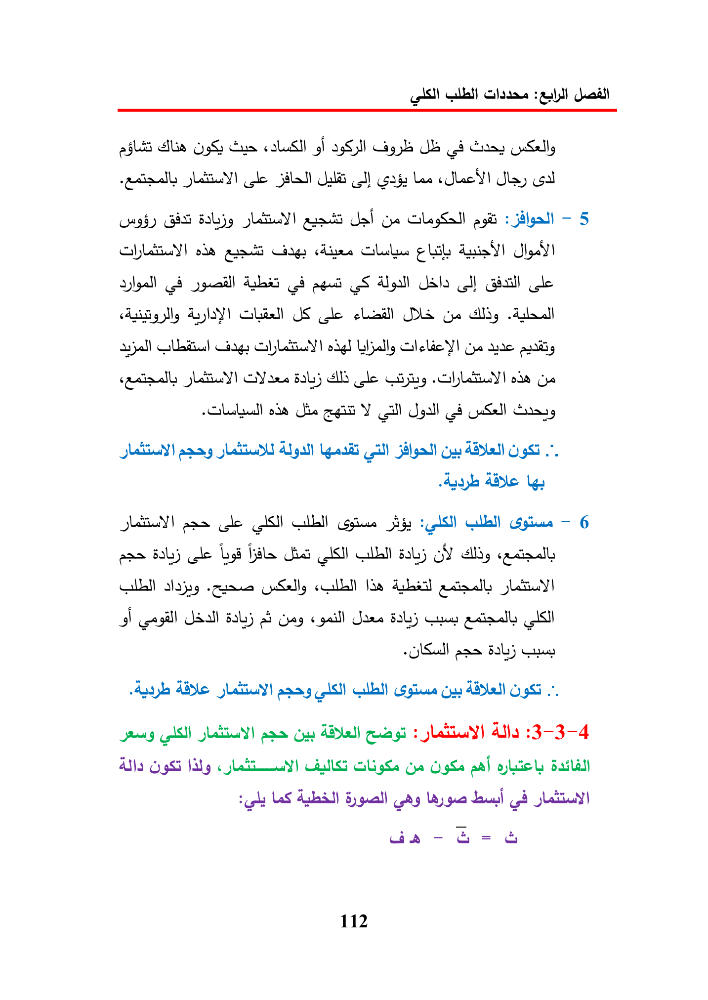

AlsGusgiGgyeGuay(leila)WalGapLesSeeYIlyGlQuadalGeagit:—5hag:lolduis!peal)peedCt!GalllyUSDIAGyeGilelicYIGyeanteslay)BaljgleodeGyeodaSieagitYal(28SLAYCusCydleLAY)pascle(ASMGull—6asebal)cleGYIda3h5265eiGagGuyISI)+pasbal)AgapeTidepanyeypasOu:ADDL)splat)AllaNayGyeLASAube)ByguaallLayguawae-G=&112